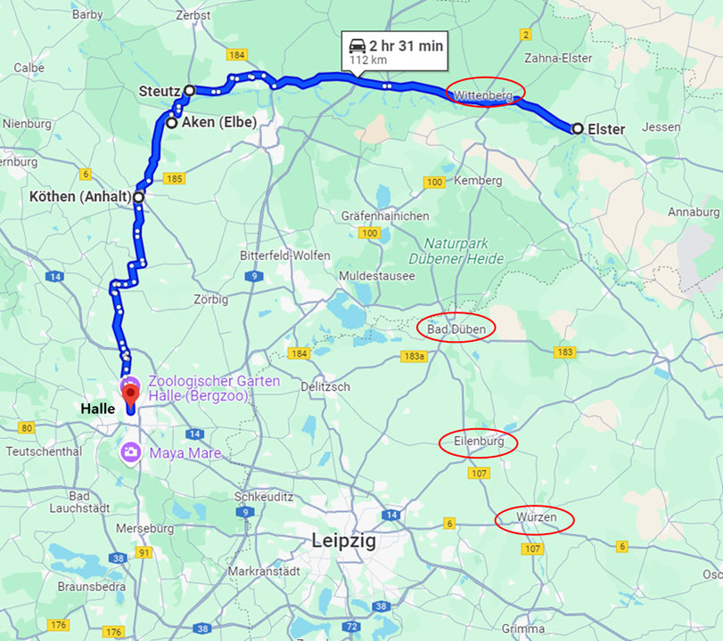
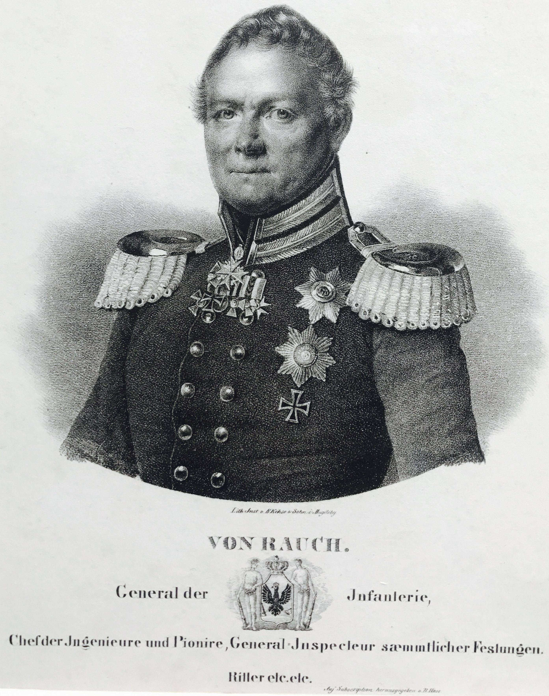
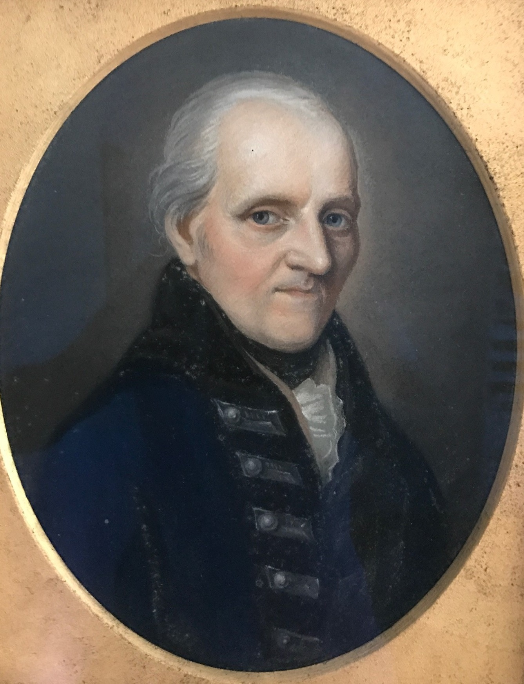

라이프치히로 가는 길 (27) - 전쟁의 안개
게시: 2025-05-12T06:30:29+09:00
나폴레옹의 기습을 피해 할러로 피신했던 블뤼허에게는 3가지 어려움이 있었습니다. 베르나도트, 전쟁의 안개, 그리고 탄약이었습니다. 첫째, 원래부터 베르나도트는 블뤼허와 그의 프로이센 장군들에게는 나폴레옹보다 더 얄밉고 믿을 수 없는 얌체였지만 지금 이 순간에는 더욱 그러했습니다. 블뤼허는 잘러강을 건너 할러로 후퇴를 시작하기 전에 어떻게든 베르나도트를 자신보다 더 먼저 남쪽으로 향하도록 유도하려 애썼습니다. 베르나도트에게 내세운 핑계는 나폴레옹의 위협으로부터 자신의 슐레지엔 방면군이 방패 역할을 할 테니 베르나토트의 북부 방면군은 안전하게 먼저 남쪽으로 가시라는 것이었습니다. 하지만 베르나도트가 블뤼허보다 용기 측면에서 좀 떨어질지는 몰라도 지능은 훨씬 뛰어났습니다. 블뤼허의 속셈은 자신이 베르나도트의 등을 떠밀어 남쪽으로 몰고 가고자 하는 것이었고 베르나도트는 그런 얄팍한 수작에 넘어가지 않았습니다. 베르나도트는 남쪽이든 북쪽이든 자신이 원하는 방향으로 자신이 원하는 때에 움직일 자유를 원했으며, 특히 여차하면 더 안전한 곳인 엘베강 북쪽의 브란덴부르크로 퇴각할 생각도 있었습니다. 덕분에 할러의 블뤼허는 저 북쪽에서 주춤주춤 눈치를 보고 있는 베르나도트 때문에 속이 터지고 있었습니다. 둘째, 전쟁의 안개가 너무 자욱하여, 즉 정보가 부족하여 대체 뭐가 어떻게 돌아가는 것인지 블뤼허도 알 수가 없었습니다. 그에게는 코삭 기병과 지역 주민들의 전폭적인 협조가 있었습니다만, 자신을 놓친 나폴레옹이 어디로 향하고 있는지 적어도 10월 12일까지는 전혀 모르고 있었습니다. 나폴레옹은 자신의 뒤를 추격하여 잘러강을 건널 준비를 하고 있을 수도 있고, 반대로 방향을 180도로 돌려 라이프치히로 달려가고 있을 수도 있었습니다. 그에 따라 블뤼허 자신의 다음 행동도 달라져야 했는데, 코삭 기병들과 주민들, 그리고 새로 잡은 프랑스군 포로들로부터 얻은 정보는 워낙 제각각이어서 종잡을 수가 없었습니다. 특히 일부 포로들은 나폴레옹이 엘베강을 건너 브란덴부르크로 가려고 한다는 최신 기밀 정보를 술술 불었는데, 블뤼허와 그나이제나우가 듣기에 이건 아무리 생각해봐도 말이 안 되는 소리여서 자신들을 꾀어내려는 허위 정보로 간주했습니다. 이런 상황에서 베르나도트가 편지를 보내왔습니다. 영국 대사 찰스 스튜어트(Charles William Stewart)가 직접 들고 온 이 편지의 내용은 사실상 명령서였습니다. 나폴레옹이 비텐베르크와 데사우, 로슬라우 등 엘베 강변의 요충지들을 공격하며 엘베강 우안으로 도강하려 하니, 즉각 북쪽으로 달려와 자신과 합류하여 나폴레옹과 싸우자는 것이었지요. 스튜어트가 구두로 전달한 북부 방면군 사령부의 분위기는 난장판이었는데, 일부는 나폴레옹이 마그데부르크로 가려고 한다고 주장하고, 일부는 함부르크의 다부와 합류하려 한다고 하며, 일부는 베를린으로 가려 한다고, 또 일부는 아예 폴란드로 가서 폴란드를 봉기시키려 한다고 주장한다는 것이었습니다. 그러니까 나폴레옹이 암호화된 편지를 통해 일급 기밀이라며 마레에게 전달했던 내용이 그대로 베르나도트에게도 전달되었던 것입니다. 블뤼허는 더욱 혼란스러웠습니다.

(Sir Thomas Lawrence가 그린 찰스 스튜어트의 유명한 초상화입니다. 주프로이센 영국 전권 대사였던 찰스 스튜어트는 당시 35세였는데, 이 그림은 바로 1년 전인 1812년 그려진 것입니다. 그는 북부 아일랜드의 영국 국교회를 믿는 영국계 지주계급의 귀족 가문 출신으로서, 당시 수상이던 캐슬레이(Robert Stewart, Viscount Castlereagh)의 이복 동생입니다. 영국의 아일랜드 착취의 역사에 있어서 영국계 지주들은 진짜 잔혹한 악역이었는데, 찰스 스튜어트도 그런 전형적인 악질 지주 중 하나였습니다. 1845년 아일랜드 대기근 때 그는 영국 전체에서 열 손가락 안에 들어가는 대부호였고 아일랜드의 자신의 저택을 개선하는데 1만5천 파운드를 사용했으나, 굶어 죽어가는 아일랜드 농부들을 위한 구호 기금에는 딱 30파운드를 냈다고 합니다. 뿐만 아니라 당시 다른 영국계 지주들이 소작료를 깎아주기도 했으나 그는 절대 깎아주지 않았습니다. 그의 아일랜드 영지에는 석탄 광산도 있어서 그는 광산주이기도 했는데, 당시 아동 노동에 대해 비난 여론이 들끓었음에도 그는 어린 아이들을 좁은 석탄 갱도에서 작업시키는 것을 계속 했습니다. 진짜 나쁜 놈입니다.) 세쨰, 당장 블뤼허에게는 딱 한 번의 전투를 치를 정도의 탄약 밖에 없었습니다. 나머지 탄약은 애초에 10월 3일 블뤼허가 엘스터에서 엘베강을 건널 때도 현장에 도착하지 않았었고, 이후에도 엘스터에서 엘베강을 건너지 않고 대기하고 있었습니다. 그러다 블뤼허가 잘러강을 건너기로 한 뒤, 예비 탄약을 실은 수송대는 엘스터에 놓았다가 해체한 부교와 함께 라우흐(Johann Justus Georg Gustav von Rauch)의 지휘하에 로슬라우를 거쳐 아켄(Aken)으로 향하고 있었습니다. 거기에도 베르나도트가 설치한 부교가 있었기 때문이었습니다. 그런데 엘베강 우안에서 레이니에의 제7군단이 로슬라우의 연합군을 때려잡으며 진격해오자 서둘러 아켄의 부교를 건너 남쪽으로 내려오고 있었습니다. 블뤼허에게는 부교는 몰라도 이 탄약이 꼭 필요했습니다. 그런데 10월 14일, 마침내 할러에 나타는 것은 부교도 탄약도 호송대도 없는 그 지휘관 라우흐 장군 달랑 한 명뿐이었습니다. 필연적으로 쾨텐(Köthen)에서 만난 베르나도트가 '블뤼허도 곧 이리로 올 것이니 너도 여기 남으라'고 했다는 것입니다. 라우흐 본인은 보고를 해야 한다는 핑계로 혼자 여기 올 수 있었으나 블뤼허의 모든 예비 탄약은 베르나도트의 수중에 떨어진 셈이었습니다. 블뤼허는 애꿎은 라우흐 장군에게 '이제 우리 군이 탄약도 없이 적군과 싸우게 되었는데, 그런 일이 실제로 생기면 너를 군법재판에 회부하겠다'라며 역정을 냈지만, 방법이 없었습니다.

(엘스터에서 아켄을 지나 쾨텐을 거쳐 할러까지 오는 길은 110km가 넘습니다. 적을 피해 무겁고 위험한 탄약 수송차를 끌고 저렇게 먼 길을 달려왔는데 들은 소리는 '군법재판 회부'라니, 라우흐도 정말 억울했을 것입니다. 다행히 나중에 라이프치히에서 그랑다르메의 탄약을 충분히 노획했기 때문에 라우흐는 군법재판을 피할 수 있었습니다.)

(라우흐 장군은 유서 깊은 귀족 가문 출신은 아니었습니다. 그의 아버지인 보나벤투라(Bonaventura von Rauch)도 주로 하급 귀족들이 맡던 공병 전문가로서 포츠담 공병 학교의 감독관이었으며. 라우흐 본인도 아버지의 학교에서 교육을 받고 공병 장교가 되었습니다. 그래서 주로 후방 업무를 맡았으며, 1807년 메멜(Memel)로 피난 가있던 프리드리히 빌헬름에게 프리틀란트 전투의 패배 소식을 보고한 사람도 당시 중령 계급이던 라우흐였습니다. 그의 아버지는 1806년의 전쟁에서 매우 불명예스러운 기록을 남겼고 처벌까지 받았으나, 아들인 구스타프 라우흐는 그에 영향을 받지 않고 게속 승진을 거듭했습니다. 가장 큰 이유는 라우흐는 샤른호스트 라인으로서, 프로이센 군 개혁에 앞장서는 입장이었기 때문이었습니다. 그는 나중에 국방부 장관까지 역임했습니다.)

(구스타프 라우흐의 아버지인 보나벤투라 라우흐입니다. 원래 그는 바이에른 출신의 수학 및 공학자였는데, 교사로서 프로이센에 일자리를 구했다가 눌러앉은 사람이었습니다. 그의 아들들 다섯이 모두 프로이센군 장교로 복무했고 대부분 고위직까지 올라갔는데, 그 중 맏아들이 구스타프 라우흐였습니다. 다만 이 아버지 라우흐는 1806년 패전에서 매우 큰 불명예를 당했습니다. 당시 슈테틴(Stettin) 요새의 수비대장이었던 그는 요새 앞에 프랑스군 기병대가 나타나자, 어차피 진 전쟁에서 무의미한 피를 흘릴 필요가 없다고 판단하고 약 5천의 수비대를 이끌고 싸우지 않고 항복했습니다. 그런데 요새 앞에 나타난 프랑스군 기병대는 알고 보니 고작 8백에 불과했습니다. 나중에 이 사실이 알려지자 프로이센군의 명예를 더렵혔다며 그는 불명예 전역과 함께 종신형을 선고받고 스판다우(Spandau) 요새의 감옥에 투옥되었습니다. 나중에 루이자 왕비의 탄원으로 요새 감옥이 아니라 스판다우 일반 가옥에 가택연금으로 바뀌긴 했지만, 1814년 사망 때까지 불명예를 피하지 못했습니다.) 이 모든 어려움의 해결은 사실 2번 항목, 즉 정확한 정보 확보에 달려 있었습니다. 애초에 블뤼허가 예상했던 것처럼 나폴레옹이 라이프치히로 간다는 것이 확인되면 베르나도트도 더 이상 딴 소리 하지 못하고 블뤼허의 뒤를 따라 라이프치히로 갈 수 밖에 없었습니다. 그럴 경우 탄약 문제도 저절로 해결될 수 있는 것이었고요. 그리고 10월 13일 밤, 속속 들어오는 보고는 나폴레옹이 과연 라이프치히로 가고 있다는 것을 분명히 보여주었습니다. 전쟁의 안개가 걷히고 있었습니다. 특히 블뤼허 휘하 러시아군 전위대를 이끌던 루체비치가 잡아온 프랑스군 중령 하나가 매우 유용한 정보를 많이 제공해주었습니다. 나폴레옹의 야전 사령부 소속이라는 그 중령은 각 군단들의 현재 위치는 물론, 나폴레옹이 베르나도트가 엘베강 북쪽으로 후퇴한 것으로 믿고 있다는 것과 요즘 나폴레옹의 지휘가 예전과는 많이 다르다는 말까지 술술 불었습니다. 요즘 나폴레옹은 무척 침울하고 의욕이 없는 듯한 모습을 보이고 있으며, 특히 잠이 부족하다는 것이었습니다. Source : The Life of Napoleon Bonaparte, by William Milligan Sloane Napoleon and the Struggle for Germany, by Leggiere, Michael V With Napoleon's Guns by Colonel Jean-Nicolas-Auguste Noël https://www.britannica.com/event/Napoleonic-Wars/Dispositions-for-the-autumn-campaign https://www.napoleon.org/en/history-of-the-two-empires/timelines/1813-and-the-lead-up-to-the-battle-of-leipzig/ http://www.historyofwar.org/articles/campaign_leipzig.html https://de.wikipedia.org/wiki/Bonaventura_von_Rauch https://de.wikipedia.org/wiki/Gustav_von_Rauch_(General) https://en.wikipedia.org/wiki/Charles_Vane,_3rd_Marquess_of_Londonderry